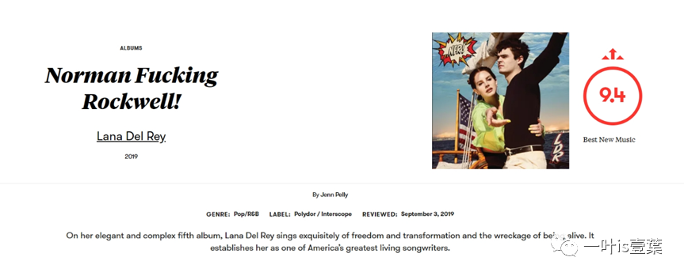
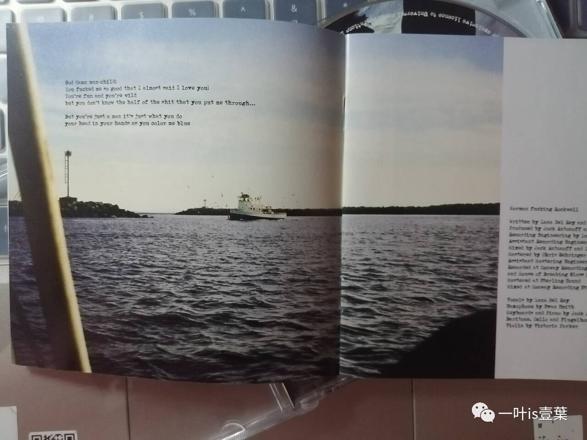

Norman Fucking Rockwell!——怀旧过后，何以面向未来？ ——Track 1
这篇文章是本人原创，在个人公众号：一叶is壹葉也有所发表，欢迎关注！❤
2019年8月30日，疫情爆发前的最后一个夏天的结尾，Lana Del Rey发行了她的专辑Norman Fucking Rockwell!，问世后产生了不小的反响，更是得到了乐评界一向抠门的Pitchfork的厚爱。
Norman Rockwell是一位美国的插画家和画家，最著名的是他为《星期六晚报》所画的封面插图。他的作品通常反映美国文化中的日常生活情景，甜美、乐观，一副 “理想美国世界”的印象。
出道伊始的Lana Del Rey就仿佛带有着“垮掉的一代”的气质，更是处处挥不去美国梦和国旗的意象。
在星条旗下，唱纸醉金迷，唱病态狂躁，overdose dying，excessive buying……
[Facebook]National Anthem (live)
[Bilibili]National Anthem (live)
她的音乐、她的表达，处处带有着“盖茨比的伤痕”。
(由于版权原因，不便放置音源，感兴趣的uu可以自行在各大音乐平台搜索)Lana总是以一种“明白这一切，却又沉溺其中，无法脱身”的姿态来叙事。正如她说“American dreams came true somehow, I swear I’ll chase them till I was dead” （Radio from Born to Die,2012）
“Money is the reason we exist, everybody knows it, it’s a fact”（National Anthem from Born to Die,2012）。
不同于Madonna直接喊出“I’m just living out the American dream, and I just realize that nothing is what it seems.”（American Life from American Life,2003）的直率，Lana Del Rey是明明知道它暗藏巨大代价的，知道它成分中的那些虚幻与虚伪，然而这些都阻挡不了她的沉迷和眷恋，她自甘沉沦其中，甚至愿意陪它一同万劫不复，“知其不可而为之”。
这首歌里描述了Lana和“man-child”的微妙关系——明明他有着这样那样的缺点，而且“make her blue”，她依然不会离开，对待这个幼稚的男人“I can’t change that, and I can’t change your mood”、“I don’t get bored, I just see you through”、“Why wait for the best when I could have you?”（Norman Fucking Rockwell from Norman Fucking Rockwell,2019）正是前文提到的她那份“眷恋”、“沉溺”。
歌词“You’re just a man, all through and through”显然是对更加普遍存在的“You’re just a woman”话语的回击，幽默嘲弄的效果很足。她或许会“示弱”甚至“病态讨好”地唱着“I am nothing without your love”（Without You from Born to Die,2012）
这种内容也是她多年来受到争议的核心点（当然，在本专辑的病娇神曲Cinnanmon Girl依然有这份熟悉的配方）
同时她也会就这这位外表高大、内心却幼稚不堪的男人，说上一句貌似若无其事、但实质上很有分量的回击“You're just a man”。而她在下一首Mariners Apartment Complex中更是直言：
I ain't no candle in the wind，
I'm the board the lightning the thunder，
……
You lose your way just take my hand，
You're lost at sea then I'll command your boat to me again，
Don't look too far right where you are that's where I am，
I'm your man.
……
Who I am? A big-time believer.
……
是啊，她就是这样一个复杂的艺人。我想，这也是为什么这一首歌的名字会与专辑同名、叫做“Norman Fucking Rockwell”，看似毫无关系，实则这是她对以Rockwell画作为象征的那段辉煌年代表达怀念的同时、对美国流行文化现状的表态——当下的阿美利卡有着这样那样的问题，但这是她的motherland，她感到无可奈何、无力改变，却又不会离开、无法离开。
而man-child或许是那普遍的、密不透风的、覆盖性的、“高大强壮”的（six-foot-two呢）、令人“blue”的、被“white & straight man”主导的压迫性话语结构。相应地，也就可以是一些保守派政客（2019年为Trump执政时期）、可以是年轻的美国……
她为这一切感到忧郁、忧愁，这和她对这片土地的感情一样深厚。
而这情感，在Track 11：The Greatest达到了一次高峰……